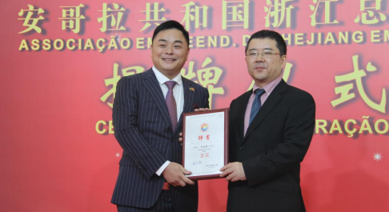
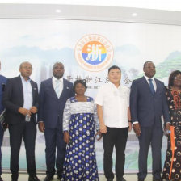
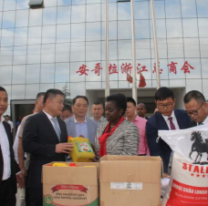
A 14 de abril de 2019, foi eleito Presidente da Câmara Geral de Comércio de Zhejiang, em Angola.
Em junho de 2019, foi nomeado conselheiro principal da Associação Angolana para a Promoção da Reunificação Pacífica da China.
Em outubro de 2020, foi nomeado conselheiro para assuntos internacionais da 10ª Federação Provincial de Chineses Regressados do Estrangeiro de Zhejiang.
Em março de 2021, foi nomeado conselheiro da Câmara de Comércio de Anzhong.
Em dezembro de 2021, tornou-se presidente da Fundação Beneficente de Combate a Incêndios de Angola.
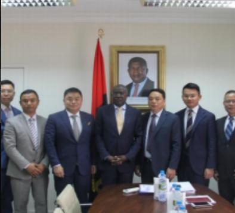
01
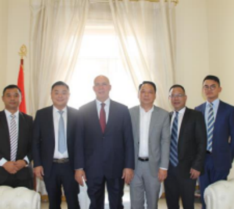
02
03
01
Na manhã do dia 9 de maio de 2019, uma delegação liderada por Chen Zhihao, Presidente da Câmara Geral de Comércio de Zhejiang em Angola, visitou o Ministério dos Direitos Humanos e da Justiça de Angola, sendo calorosamente recebida pelo Ministro dos Direitos Humanos e da Justiça, De Queiroz. As duas partes realizaram um simpósio para discutir temas como o desenvolvimento da Câmara de Comércio e o reforço das relações e intercâmbios bilaterais.
02
Em outubro de 2019, Chen Zhihao, Presidente da Câmara de Comércio de Zhejiang em Angola, e a sua delegação visitaram o Gabinete do Ministro de Estado do Palácio Presidencial a convite de Manuel José Nunas, Ministro de Estado para o Desenvolvimento Económico e Social de Angola, e realizaram conversações.
03
Na tarde do dia 28 de maio de 2020, Chen Zhihao, presidente da Câmara Geral de Comércio de Zhejiang em Angola, e a sua delegação visitaram o Ministério da Indústria e Comércio de Angola, onde realizaram conversações.
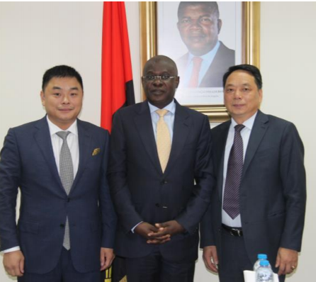
Ministro de Estado para o Desenvolvimento Económico e Social de Angola
Júnior
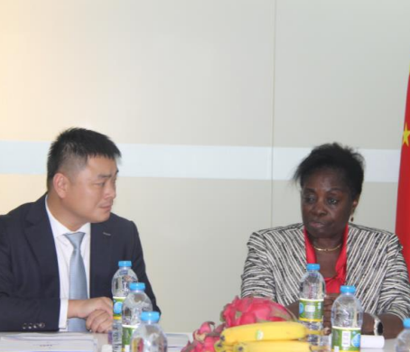
Secretário Presidencial Angolano para os Assuntos Sociais
Fátima
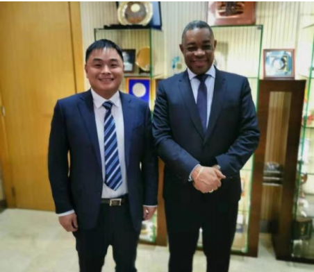
Ministro do Interior de Angola
Laborinho
O Presidente Chen Zhihao liderou os membros da Câmara de Comércio em diversas visitas a vários ministérios e comissões em Angola, com o objectivo de compreender as tendências políticas, defender operações legais e em conformidade com a legislação, priorizar o desenvolvimento local a longo prazo, conciliar os interesses das empresas associadas com o desenvolvimento socioeconómico e os interesses da população angolana, e praticar activamente o conceito de construção de uma "comunidade com um futuro partilhado para a humanidade".
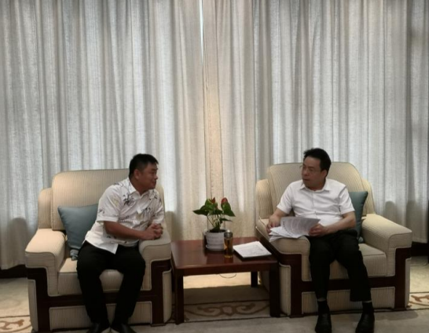
Relatório sobre a reeleição da Câmara de Comércio
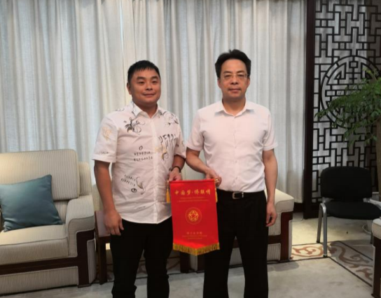
Apresentar a faixa e tirar uma foto de grupo.
Lian Xiaomin sugeriu que, ao mesmo tempo que se continua a fortalecer os laços e a amizade, a Federação Provincial de Chineses Retornados do Exterior de Zhejiang espera que os cidadãos de Zhejiang que vivem no exterior se integrem ativamente no desenvolvimento e na construção dos seus países anfitriões e aprofundem a amizade entre os povos dos dois países.
Fortalecer a autoconstrução das associações de chineses no estrangeiro, trabalhando lado a lado para se desenvolverem em conjunto, mantendo o apreço mútuo entre as associações de chineses no estrangeiro e os seus membros, e promovendo alianças fortes entre as associações de chineses no estrangeiro.
Continuaremos a levar por diante o espírito da geração mais antiga de chineses ultramarinos, a destacar as conquistas únicas da comunidade chinesa no estrangeiro e a ajudar a Câmara Geral de Comércio de Zhejiang em Angola e todos os chineses ultramarinos em Angola e no mundo a construir uma imagem positiva.
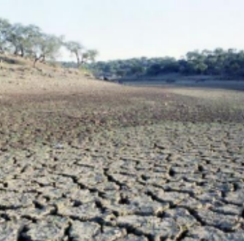
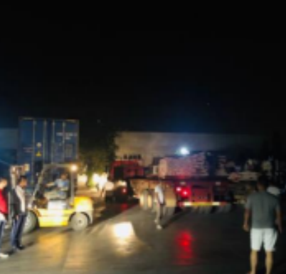
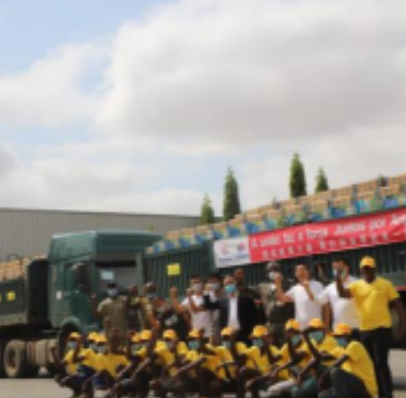
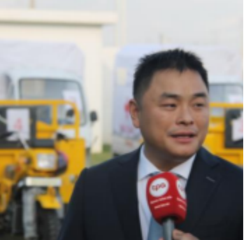
Uma seca severa atingiu o sul de Angola, levando a Câmara Geral de Comércio de Zhejiang a lançar uma campanha de angariação de fundos de emergência da noite para o dia, angariando centenas de milhares de dólares em material de ajuda humanitária. Camiões carregados com estes mantimentos foram entregues às autoridades angolanas no dia seguinte e partiram para a zona afectada para apoiar a população afectada pela seca. Na cerimónia de entrega, a Televisão Nacional Angolana entrevistou Chen Zhihao, presidente da Câmara Geral de Comércio de Zhejiang.
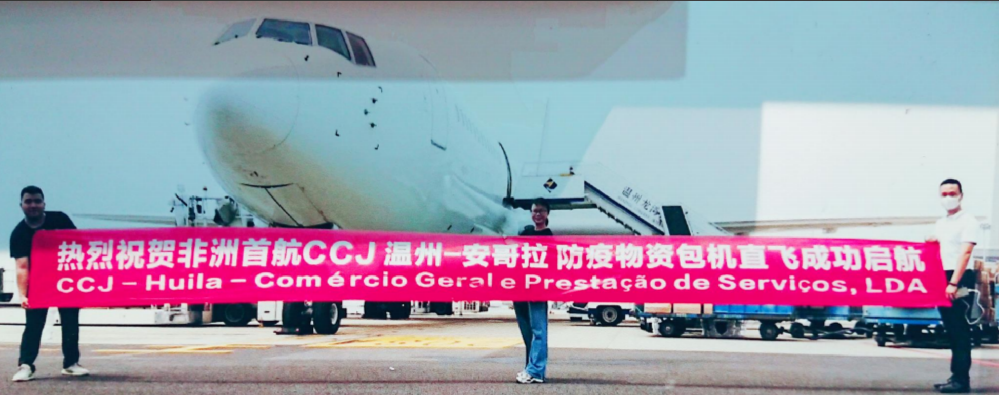
Como é amplamente sabido, em Fevereiro de 2020, quando o surto de COVID-19 surgiu na China, Wenzhou, na província de Zhejiang, tornou-se a área mais afectada fora da província de Hubei. O presidente liderou a câmara de comércio na recolha de 398 mil yuans em donativos de emergência para apoiar o combate da China à epidemia. De seguida, a pandemia alastrou a nível global, com muitos países africanos, incluindo Angola, a enfrentarem situações extremamente graves. O presidente concebeu então a ideia de adquirir mantimentos para a prevenção da epidemia para apoiar Angola. Contactou diversas partes e comprou 10 milhões de máscaras de proteção descartáveis a um fabricante. Estas máscaras chegaram ao Aeroporto de Wenzhou a 14 de maio de 2020 para inspeção e foram depois enviadas para Angola. Isto marcou a primeira rota de voo charter intercontinental direta aberta por um aeroporto chinês para a África Ocidental. O presidente gastou um milhão de dólares em voos charter, partindo duas vezes do Aeroporto Internacional de Wenzhou Longwan, transportando uma grande quantidade de máscaras, termómetros de testa, equipamento de proteção e outros mantimentos para Angola. Isto aliviou significativamente a escassez de fornecimentos para a prevenção da epidemia no mercado local e contribuiu de forma importante para o combate local à epidemia.
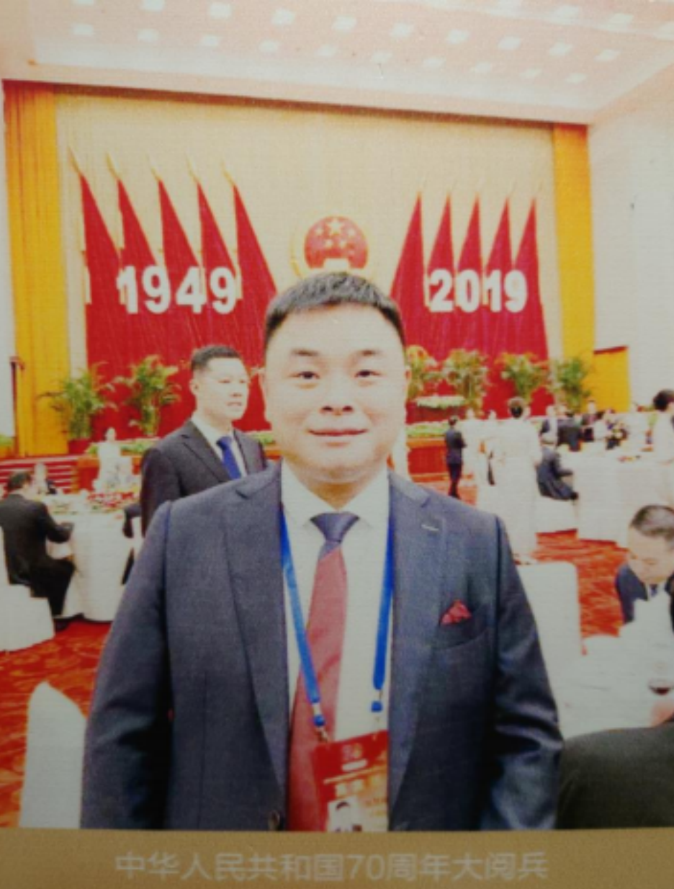
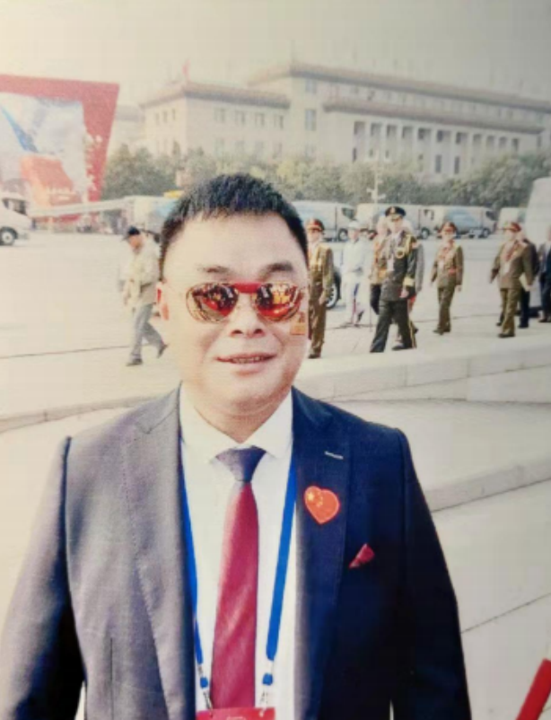
No dia 1 de outubro de 2019, o Presidente Chen Zhihao, como convidado especial para celebrar o 70º aniversário da fundação da República Popular da China, subiu à tribuna de honra em frente à Praça Tiananmen, em Pequim, para assistir ao desfile militar e testemunhar pessoalmente a grandiosa celebração do aniversário da nova China.
2021-Chen Zhihao, Presidente do Grupo NIODIOR, foi reconhecido como uma Personalidade de Destaque em Investimentos Diversificados e Bem-Estar Social em Angola no período de 2021-2022; o Grupo NIODIOR recebeu também reconhecimento pelas suas excecionais contribuições no setor industrial.
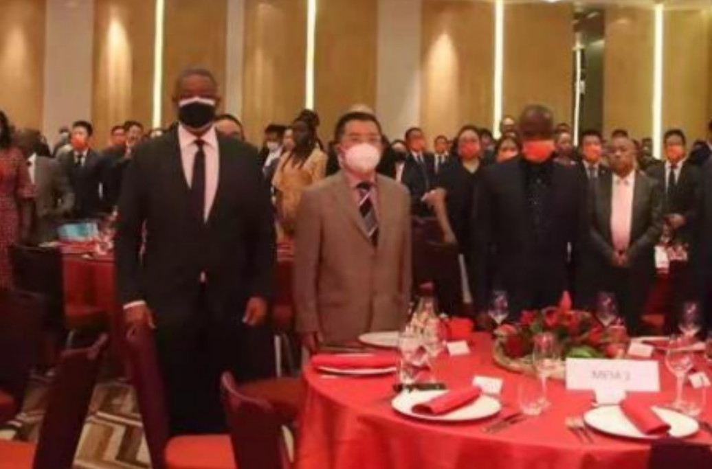
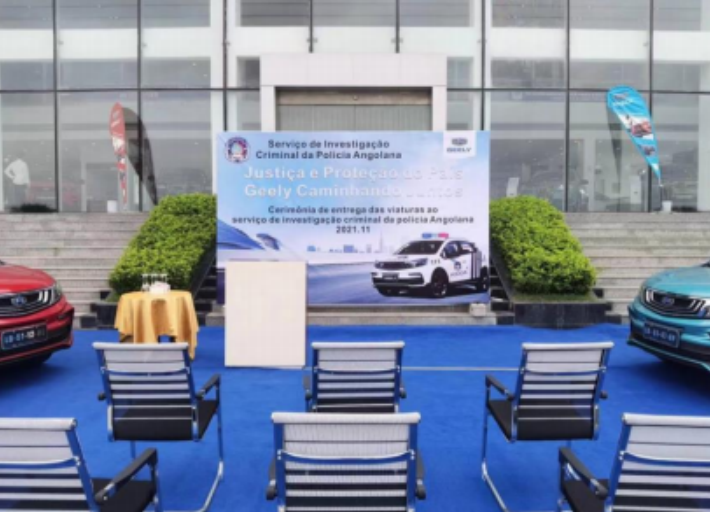
Cerimónia de entrega do carro
Estação de TV
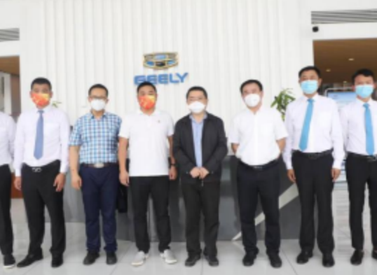
Divisão Automóvel
conferência nacional angolana
Ministério do Interior
departamento de polícia criminal
agência de segurança
polícia de fronteira
Gabinete de imigração
Embaixada da Turquia
Estação de TV
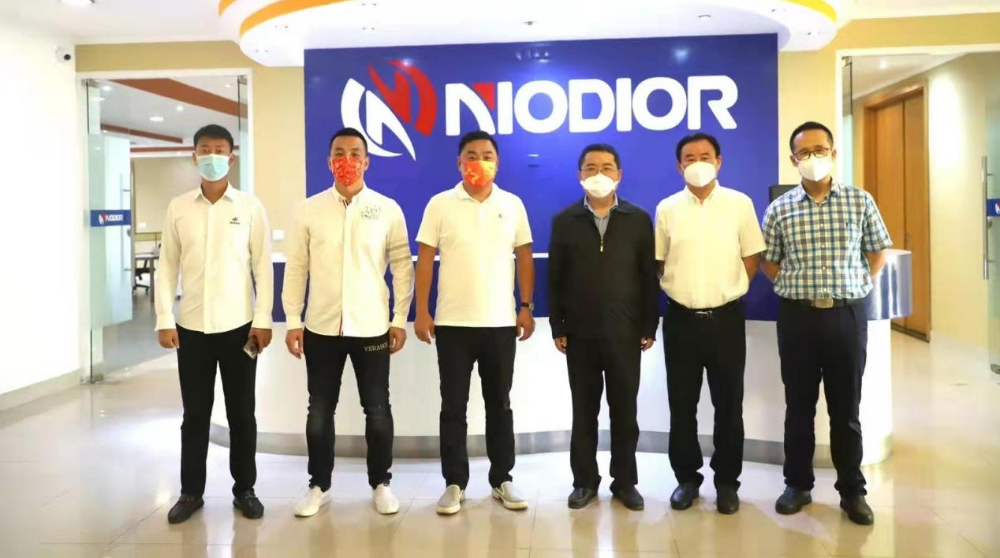
Cerimónia de entrega de viatura do Departamento de Investigação Criminal da Polícia Angolana
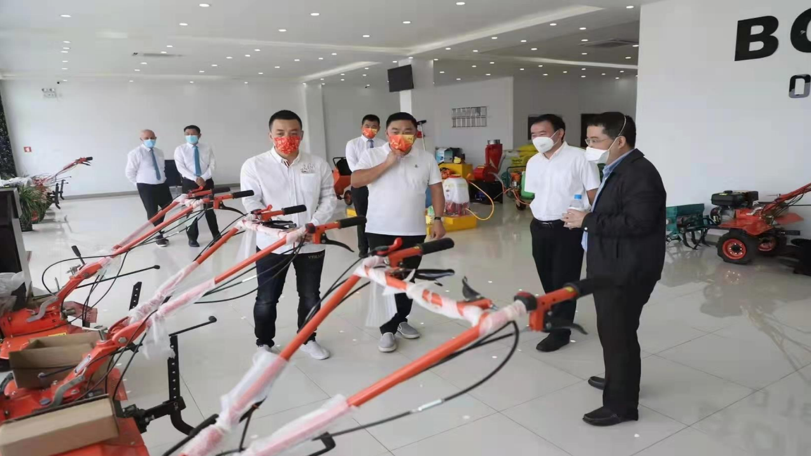
A estação angolana TPA TV noticiou:
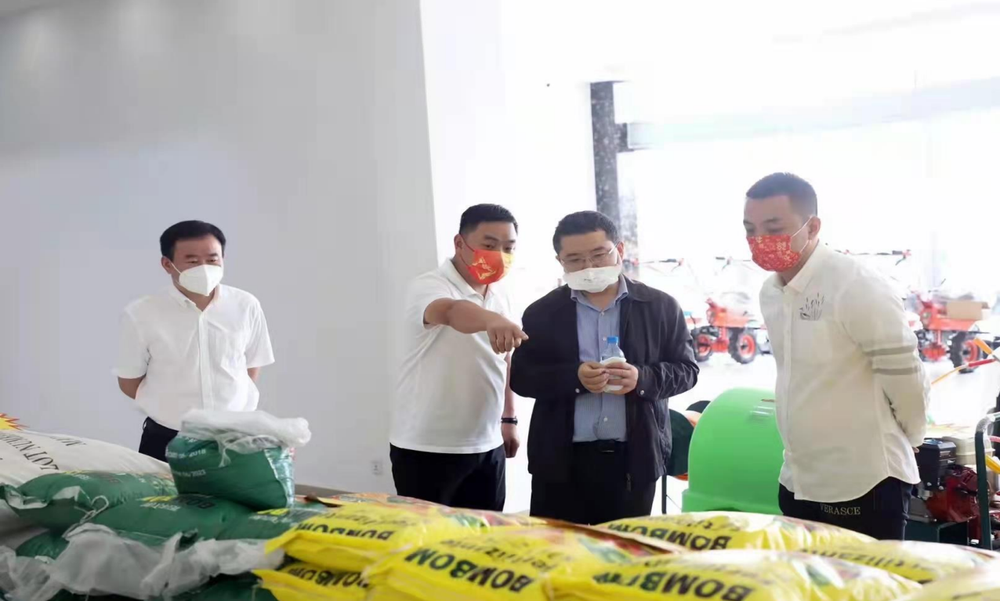
O embaixador Gong Tao inspeciona a Divisão Automóvel da MB.
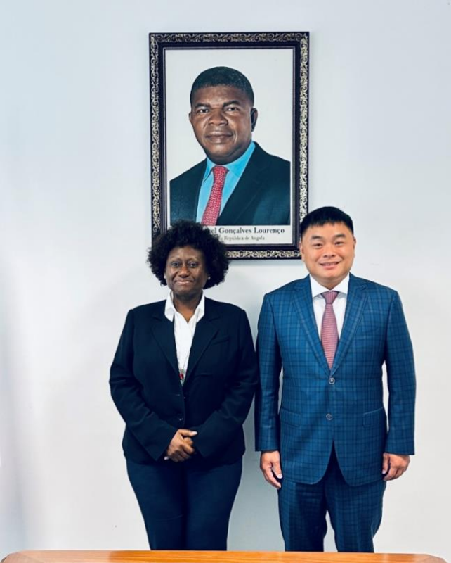
A 26 de outubro de 2022, a Ministra das Pescas e Recursos Marinhos de Angola, Carmen, reuniu-se com uma delegação liderada por Chen Zhihao, Presidente da Câmara Geral de Comércio de Zhejiang em Angola, tendo ambos os lados mantido conversas cordiais. A Ministra Carmen expressou a sua satisfação por Chen Zhihao e a sua delegação estarem entre os primeiros convidados que recebeu desde que assumiu o cargo, e manifestou o seu grande interesse nos projetos de Transporte Marítimo de Dazhou e do Centro de Comércio Logístico da Cadeia Fria Angola-China. Elogiou os projectos pela sua importância para a ambição de Angola em concretizar o desenvolvimento da sua economia azul e manifestou a sua intenção de os visitar e inspeccionar pessoalmente.